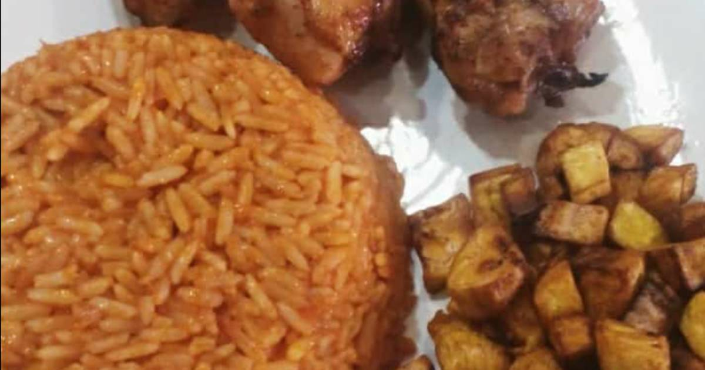
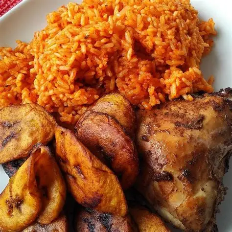
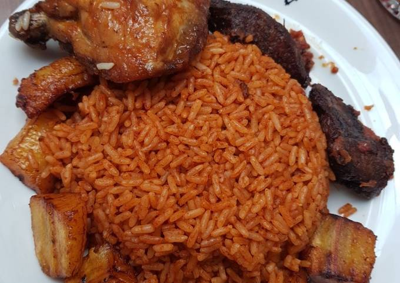

 
Ingredients:
- - 3 cups long grain parboiled rice
- - 1 can (400g) chopped tomatoes or 5 fresh tomatoes
- - 2 red bell peppers (tatashe)
- - 1 medium onion (divided)
- - 1 scotch bonnet pepper (optional, for heat)
- - 2 tablespoons tomato paste
- - 4 cups chicken stock (or water + seasoning)
- - 1 teaspoon curry powder
- - 1 teaspoon thyme
- - 2–3 seasoning cubes (Maggi or Knorr)
- - Salt to taste
- -½ teaspoon white or black pepper
- - ½ cup vegetable or sunflower oil
- - 1 bay leaf (optional)
- - Cooked chicken or beef (optional)
---
Instructions:
- . Blend the sauce:
- Blend tomatoes, red bell peppers, scotch bonnet, and 1 onion until smooth.
- . Parboil the rice:
- Rinse and parboil the rice for about 10 minutes. Drain and set aside.
- . Cook the sauce:
- Heat oil in a large pot. Add chopped onions and fry for 2 minutes.
- Add tomato paste and fry for 5 minutes.
- Pour in the blended mixture and cook until the water dries out and oil begins to rise (about 15–20 minutes).
- . Season the sauce:
- Add curry, thyme, pepper, seasoning cubes, bay leaf, and salt.
- Pour in the chicken stock and stir well.
- . Add the rice:
- Add the parboiled rice and stir until it’s well coated with the sauce.
- Cover the pot with foil or a tight lid to trap steam.
- Cook on low heat for 20–30 minutes, checking occasionally. Add a little water if needed.
- . Steam to finish:
- When rice is soft and liquid is absorbed, turn off the heat.
- Let it sit for 5 minutes before serving.
Optional:
- Serve with fried plantain, salad, or grilled chicken.
Let me know if you want a smaller or bigger portion!